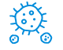

특정한 항원 없이도 비정상 세포를 감지하고 직접 살상
NK세포는 비정상 세포를 인지할 수 있는 다양한
수용체를 가지고 있기 때문에 특정 항원 없이도
비정상세포를 감지하고 즉각적으로 제거합니다.
면역계를 조절
후천 면역세포 (수지상세포, T세포, B세포)의
활성을 유도하여 면역반응과 염증반응을
조절합니다.
암 세포의 증식과 재발,
전이를 효과적으로 억제
암 줄기세포(Cancer Stem Cell, CSC)나 순
환종양세포 (Circulating Tumor Cell, CTC)
들을 효과적으로 제거합니다.